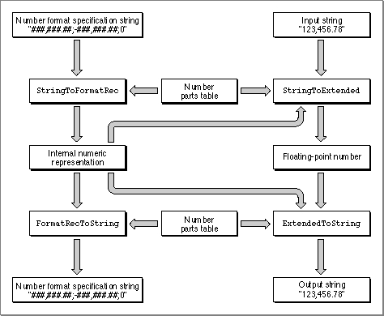

Working With Numeric Strings
When you present numbers to the user, or when the user enters input numbers for your application to use, you need to convert between the internal numeric representation of the number and the output (or input) format of the number. The Text Utilities provide several routines for performing these conversions. Some of these routines take into account the many variations in numeric string formats (output formats) of numbers in different regions of the world.If you are converting integer values into numeric strings or numeric strings into integer values, and you don't need to take international number formats into account, you can use the two basic number conversion routines:
NumToString, which converts an integer into a string, andStringToNum, which converts a string into an integer. These routines are described in the section "Converting Between Integers and Numeric Strings," which begins on page 5-38.If you are working with floating-point numbers, or if you want to accommodate the possible differences in output formats for numbers in different countries and regions of the world, you need to work with number format specification strings. These are strings that specify the input and output formats for numbers and allow for a tremendous amount of flexibility in displaying numbers.
To use number format specification strings and convert numbers, you need to follow these steps:
To accommodate all of the possibilities for the different number formats used in different countries and regions, you need to work with numeric strings, number parts tables, number format specification strings, and floating-point numbers. The Text Utilities include the routines shown in Figure 5-12 to make it possible for your application to accept and display numeric strings in many different formats. You can accept an input string in one format and create an output numeric string that is appropriate for an entirely different area of the world. Figure 5-12 summarizes the relationships among the different data and routines used for these conversions.
- You first define the format of numbers with a number format specification string. An example of such a string is
###,###.##;-###,###.##;0. This string specifies three number formats: for positive number values, for negative number values, and for zero values. The section "Using Number Format Specification Strings," which begins on page 5-39, describes these definitions in detail.- You must also define the syntactic components of numeric string formats using a number parts table. This table is part of the tokens (
'itl4') resource for each script system. It includes definitions of which characters are used in numeric strings for displaying the percent sign, the minus sign, the decimal separator, the less than or equal sign, and other symbols. The number parts table is described with the tokens resource in the appendix "International Resources" in this book.- You then use Text Utilities routines to convert the number format specification string into an internal representation that is stored in a
NumFormatStringRecrecord. This is a private data type that is used by the number conversion routines. You convert a number format specification string into aNumFormatStringRecrecord with theStringToFormatRecfunction, and you perform the opposite conversion with theFormatRecToStringfunction. Both of these functions are described in the section "Converting Number Format Specification Strings Into Internal Numeric Representations," which begins on page 5-43.- Once you have a
NumFormatStringRecrecord that defines the format of numbers for a certain country or region, you can convert floating-point numbers into numeric strings and numeric strings into floating-point numbers. TheStringToExtendedandExtendedToStringfunctions perform these conversions; these are described in the section "Using Number Format Specification Strings," which begins on page 5-39.Figure 5-12 Using the number formatting routines

The number format specification string in the upper left box in Figure 5-12 defines how input and output numeric strings are formatted; in this case, they are formatted in the style most commonly used in the United States, with a comma as the thousand separator. TheStringToFormatRecformat takes the number format specification string as input, along with a number parts table, and creates an internal representation, which is stored in a record of data typeNumFormatStringRec.If you later want to create a number format specification string from the internal representation, you can call the
FormatRecToStringfunction. This function takes a record of typeNumFormatStringRecand a parts table, and creates a string that you can display or edit.Once you have an internal representation of your formatting specification, you can use it for converting between strings and floating-point numbers. The
StringToExtendedfunction takes an input string, aNumFormatStringRec, and a number parts table, and creates a floating-point number. TheExtendedToStringfunction takes a floating-point number, aNumFormatStringRec, and a number parts table, and creates a string.Each of the four functions shown in Figure 5-12 returns a result of type
FormatStatus, which is an integer value. The low byte of the result is of typeFormatResultType, the values of which are summarized in Table 5-6.Converting Between Integers and Numeric Strings
The simplest number conversion tasks for your application involve integer values and do not take international output format differences into account. Text Utilities provides one routine to convert an integer value into a numeric string and another to convert a numeric string into an integer value.The
NumToStringprocedure converts a long integer value into a string representation of it as a base-10 value. TheStringToNumprocedure performs the opposite operation, converting a string representation of a number into a long integer value. For example, Listing 5-6 converts a number into a string and then back again.Listing 5-6 Converting a long integer into a numeric string
VAR str: Str255; i,j: LongInt; BEGIN i := 4329; NumToString(i, str); {str is now "4329"} StringToNum(str, j); {j is now 4329 } END;Using Number Format Specification Strings
When you want to work with floating-point values and numeric strings, you need to take into account the different formats that are used for displaying numbers in different countries and regions of the world. Table 5-7 shows some of the numeric string formats that are used in different versions of system software.You use number format specification strings to define the appearance of numeric strings in your application. Each number format specification string contains up to three parts: the positive number format, the negative number format, and the zero number format. Each format is applied to a numeric value of the corresponding type: when a positive value is formatted, the positive format is used, when a negative value is formatted, the negative format is used, and when a zero value is formatted, the zero format is used. When a number format specification string contains only one part, that part is used for all values. When a number format specification string contains two parts, the first part is used for positive and zero values, and the second part is used for negative values. Table 5-8 shows several different number format specification strings, and the output numeric string that is produced by applying each format to a numeric value.
The three portions of a number format specification string (positive, negative, and zero formats) are separated by semicolons. If you do not specify a format for negative values, negative numbers are formatted using the positive format and a minus sign is inserted at the front of the output string. If you do not specify a format for zero values, they are presented as a single '0' digit.
These number format specification strings contain different elements:
Number parts separators come in two types: the decimal separator and the thousand separator. In the U.S. localized version of the Roman script system, the decimal separator is the '.' character and the thousand separator is the ',' character. Some script systems use other characters for these separators. The number conversion routines each take a number parts table parameter that includes definitions of the separator characters.
- number parts separators for specifying the decimal separator and the thousand separator
- literals that you want included in the output formats
- digit placeholders
- quoting mechanisms for handling literals correctly
- symbol and sign characters
Literals in your format strings can add annotation to your numbers. Literals can be strings or brackets, braces, and parentheses, and must be enclosed in quotation marks. Table 5-9 shows some examples of using literals in number format specification strings.
Digit placeholders that you want displayed in your numeric strings must be indicated by digit symbols in your number format specification strings. There are three possible digit symbols: zero digits (0), skipping digits (#), and padding digits (^). The format string in line 4 of Table 5-8 contains examples of each. The actual characters used for denoting each of these are defined in the tokens (
'itl4') resource number parts table.You must specify the maximum number of digits allowed in your formats, as the number formatting routines do not allow extension beyond them. If the input string contains too many digits, an error (
- Zero digits add leading zeros wherever an input digit is not present. For example, -1 in line 4 of Table 5-8 produces (001) because the negative number format is specified as "(000)", meaning that the output is enclosed in parentheses and leading zeros are added to produce three digits.
- Skipping digits only produce output characters when an input digit is present. For example, if the positive number format is "###" and the input string is "1", then the output format is "1" (not " 1" as you might expect. Each skipping digit in the number format specification string is replaced by a digit character if one is present, and is not replaced by anything (is skipped) if a digit character is not present.
- Padding digits are like zero digits except that a padding character such as a nonbreaking space is used instead of leading zeros to "pad" the output string. You can use padding digits to align numbers in a column. The number conversion routines each take a number parts table parameter that includes definitions of padding characters.
formatOverflow) will be generated. If the input string contains too many decimal places, the decimal portion is automatically rounded. For example, given the format of###.###, a value of 1234.56789 results in an error condition, and a value of 1.234999 results in the rounded-off 1.235 value.The number formatting routines always fill in integer digits from the right and decimal places from the left. This can produce the results shown in Table 5-10, which includes a literal in the middle of the format strings to demonstrate this behavior.
Quoting mechanisms allow you to enclose most literals in single quotation marks in your number format specification strings. If you need to include single quotation marks as literals in your output formats, you can precede them with the escape character (\). Table 5-11 shows several examples of using quoting mechanisms.
Symbol and sign characters in your number format specification strings allow you to display the percent sign, exponents, and numbers' signs. The actual glyphs displayed for these symbols depend on how they are defined in the number parts table of a tokens resource. The symbols that you can use and the characters used for them in the U.S. Roman script system are shown in Table 5-12.
Table 5-12 Table 5-12 Symbols in number format strings
Symbol U.S.
RomanNumber format
stringExample Plus sign + +### +13 Minus sign - -### -243 Percent sign % ##% 14% EPlus E+ ##.####E+0 1.2344E+3 EMinus E- #.#E-# 1.2E-3 For more information about these symbols and the tokens defined for them, see the section on number parts tables in the appendix "International Resources" in this book.
Converting Number Format Specification Strings Into Internal
To use a number format specification string in your application, you must first convert the specification string into an internal numeric representation that is independent of country, language, and other cultural considerations. This allows you to map the number into different output formats. This internal representation is sometimes called a canonical number format. The internal representation of format strings is stored in a
Numeric RepresentationsNumFormatStringRecrecord.You can use the
StringToFormatRecfunction to convert a number format specification string into aNumFormatStringRecrecord. To perform this conversion, you must also specify a number parts table from a numeric-format resource. The
number parts table defines which characters are used for certain purposes (such as separating parts of a number) in the format specification string.You can use the
FormatRecToStringfunction to convert aNumFormatStringRecrecord back into a number format specification string, in which the three parts (positive, negative, and zero) are separated by semicolons. This function also uses a number parts table to define the components of numbers; by using a different table than was used in the call toStringToFormatRec, you can produce a number format specification string that specifies how numbers are formatted for a different region of the world. You useFormatRecToStringwhen you want to display the number format specification string to a user for perusal or modification.Converting Between Floating-Point Numbers and Numeric Strings
Once you have aNumFormatStringRecrecord that defines the format of numbers for a certain region of the world, you can convert between floating-point numbers and numeric strings.You can use the
StringToExtendedfunction to convert a numeric string into an 80-bit floating-point value.StringToExtendeduses aNumFormatStringRecrecord and a number parts table to examine and convert the numeric string into a floating-point value.The
ExtendedToStringfunction performs the opposite conversion: it uses aNumFormatStringRecrecord and a number parts table to convert an 80-bit floating-point value into a numeric string that is formatted for output.